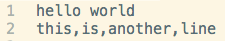
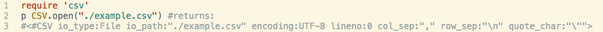
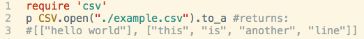
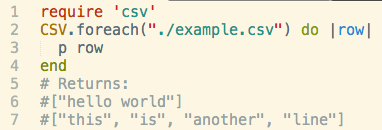
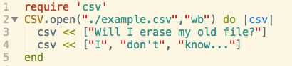
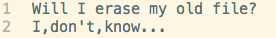
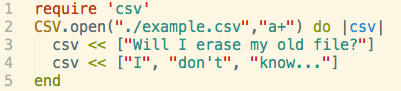
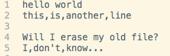

There are many ways to access things outside your script, so today we will review three classes(modules?) to access and bring in these foreign objects into your script. gets.chomp is/will be in another blog post.
CSV
CSV means comma seperated values.
When you insert a CSV file into a ruby script, you get an array of strings for each line from the csv file. String elements of your arrays are delineated by a comma from your original CSV file. In order to use these commands, you need to require 'csv'in your ruby script. Use these CSV methods only on a CSV file.
Reading CSV Files Into Your Script
All CSV commands are used upon this particular CSV file:
CSV.open("filename") returns a CSV object
CSV.open("filename").to_a changes your CSV object into a parent array. You can then view the nested arrays that were hidden from your view when your parent array was a CSV object.
CSV.read("filename") is the same thing as CSV.open("filename").to_a It will return nested arrays of string elements within one parent array.(strings in nested arrays are seperated by commas from original CSV file.)
CSV.foreach("filename"){|row| #do w/e with row} reads CSV file line by line and returns an array of strings for each line. It does not return a parent array like CSV.read
Writing to your CSV File
Use an argument "wb" in conjunction with CSV.open to write over your entire csv file..
Corresponding CSV file
Use argument "a+" in conjunction with CSV.open to write at the end of your csv file.
Corresponding CSV file
 More on CSV commands